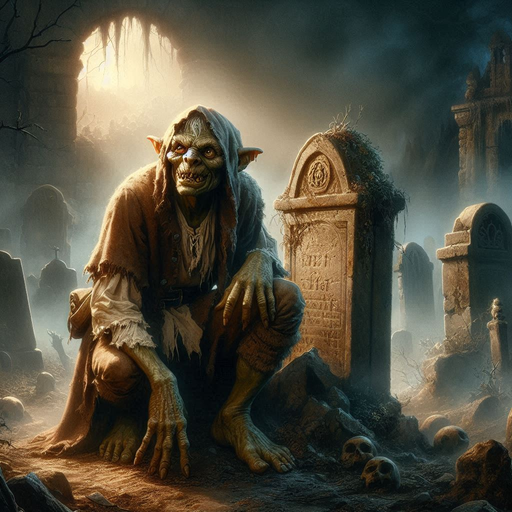
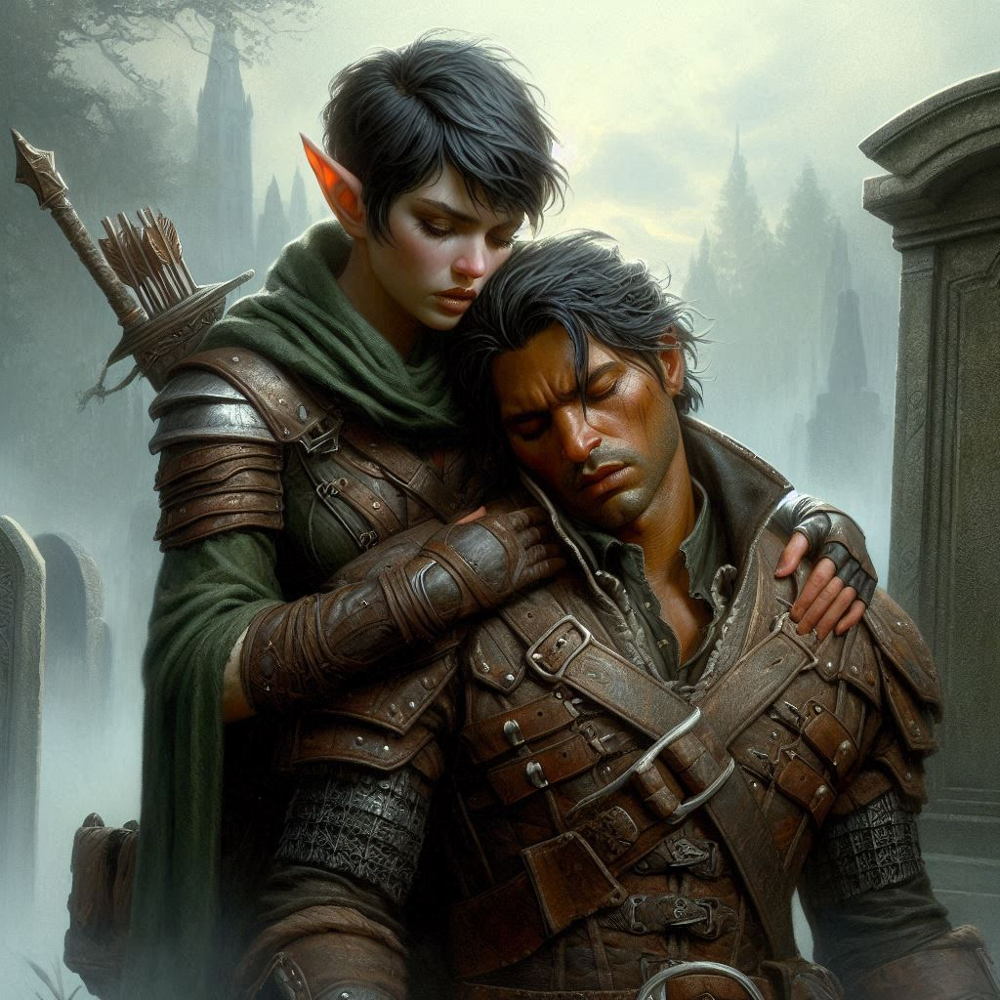

Elias's Doubt
You stand in the twisted landscape of the Shadow Realm, the air thick with a sense of malice. Beside you, Elias’s eyes narrow as he watches Shamurel prepare his dagger, the goblin bristling with a fierce determination to protect you both. The distant lights of Umbra'Thal shimmer on the horizon, but your focus is on the immediate danger: the hag and her hellhound.
The creature is massive, its dark fur matted and its eyes glowing with a sinister fire. It growls, pacing before its master, the hag—a crone with sunken eyes and a smile like shattered glass. Her voice, as cold as the abyss, weaves a spell around you. You feel its tendrils, trying to twist your thoughts, to make you doubt Elias, to make you question your purpose. But you shake it off. There’s no time for hesitation.
Shamurel grips your arm briefly, his sharp goblin gaze darting between you and Elias. “I’ll handle the hag. You take the beast.”
Elias steps forward, drawing his bow and sending a quick glance your way. There’s concern in his eyes. You see it in the tightness of his jaw, the way he shifts slightly, positioning himself between you and the danger. "Stay close," he mutters.
But you know better. The only way forward is to fight—and you’re not about to back down.
The hellhound lunges, its teeth bared and flames licking from its mouth. You dodge to the side, drawing your twin daggers. The beast snaps, too close, and you feel the heat of its breath singe the air around you. With a quick slash, you drive your blade into its side. The hellhound howls, staggering back.
You don’t give it a chance to recover. Another slash—a swift, clean strike—and the hellhound stumbles again. But before you can finish it, the hag’s voice echoes through the night. Her spell strikes Elias.
You turn just in time to see his face contort in confusion and pain. His bow slips from his grasp, and his hand goes to his chest as if a blade had pierced his heart. “Kira... no,” he mutters, stumbling.
“Elias!” you cry, but the hag laughs, her voice dripping with malice.
“He’ll never trust you now,” she sneers, her bony fingers curling through the air. “He sees the truth. You don’t care for him. You never did.”
For a heartbeat, you feel the spell tugging at you too, making you doubt yourself. But you can’t give in. You grit your teeth, pushing back the shadows swirling in your mind. You need to end this, quickly.
With a powerful leap, you plunge your dagger into the hellhound’s throat. Its body collapses, lifeless, before it fades into dark mist. Shamurel darts forward, slashing at the hag, but she twists away, cackling as her magic continues to infect Elias.
Shamurel roars, “Go! I’ll deal with her! Save your friend!”
You hesitate, torn between helping the goblin or staying by Elias’s side. But Shamurel holds his ground, fearlessly facing the hag. You see in his eyes a fierce determination—this is a fight he’s ready for.
You kneel beside Elias, your hand resting on his arm. His breath comes in ragged gasps, his eyes wild with confusion. “Elias, it’s a spell. She’s making you believe things that aren’t true.”
He shakes his head, pushing your hand away. “No, Kira. She’s only showing me what I’ve been too afraid to admit... You don’t need me. You’ve never needed me.” His voice breaks, his gaze lost in the storm of dark magic.
Your heart aches. You feel the weight of his words, the years of unspoken emotions between you. You’ve always known Elias cared for you, but you were never ready to face it. And now, in this cursed realm, with the shadow of Jorsh lingering in your past, it’s more complicated than ever.
But you can’t let the hag’s spell tear you apart. Not now.
You grab Elias’s shoulders, forcing him to look at you. “Elias, listen to me. I need you. We’ve been through too much together for you to walk away. Don’t let her lies break us.”
He looks at you, his eyes clouded with doubt. The hag’s magic is strong, but you know there’s one thing that can break through it—truth.
The choice is yours.
You lean in closer, your voice steady. “Elias, stay with me. We’re in this together. I’m not letting you go.”
But his gaze flickers away, his hands trembling. “Maybe... maybe you’re better off without me. I can take on Varis. You focus on Baider. It’s for the best.”
The words hit you like a dagger. His resolve is crumbling, and you feel the weight of your next decision bearing down on you. Behind you, the goblin and the witch are locked in mortal combat.